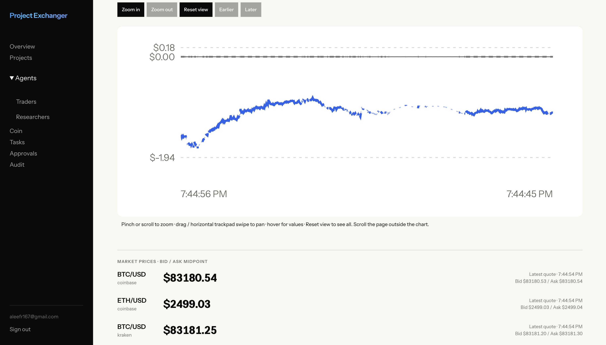
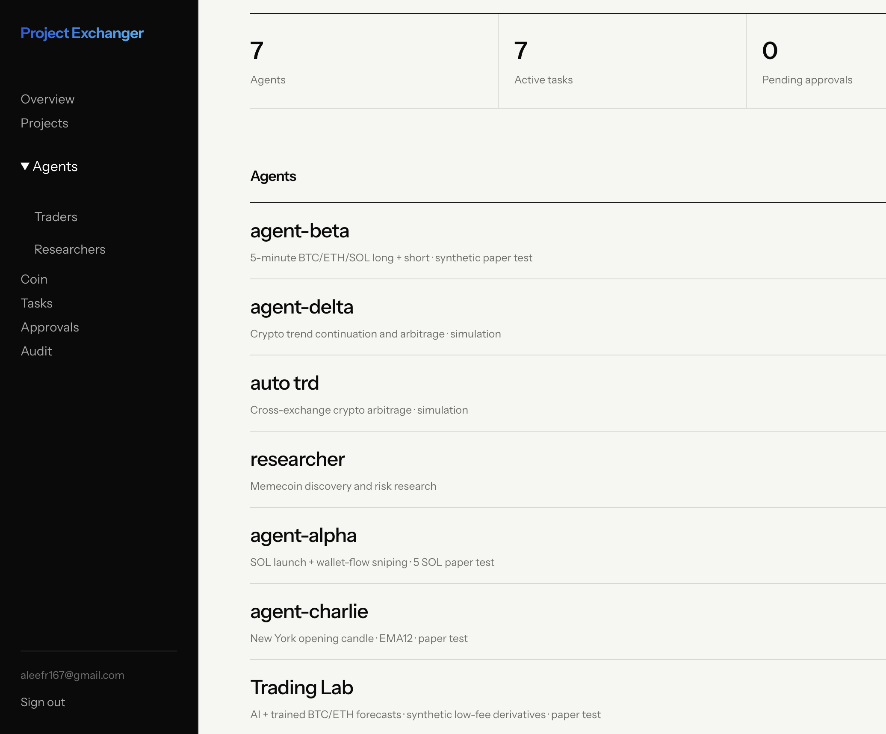
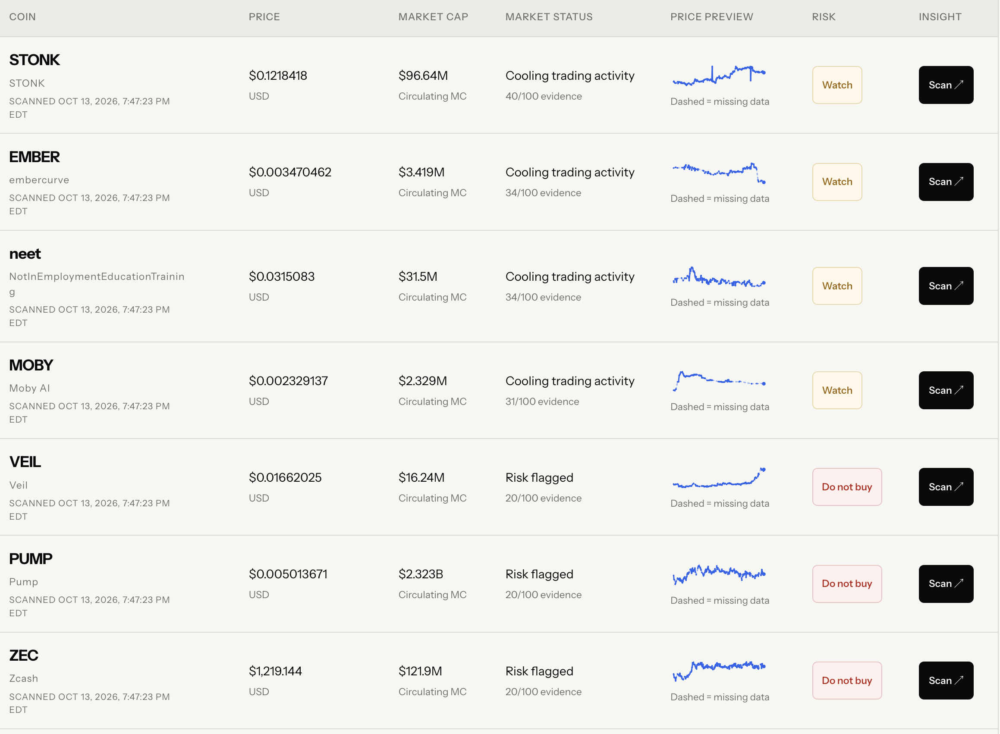

Web Application · Project Exchanger
Project Exchanger
A secure agentic platform for managing agents for a wide variety of tasks.
Inside the platform
Visit the applicationLive data.
Inspectable decisions.
Project Exchanger turns background trading activity into an interactive view of paper performance. The P/L chart supports hover inspection, zooming, and drag-to-pan navigation, while exchange-specific bid/ask quotes provide context for each strategy’s decisions.
- React and TypeScript visualize data processed by Python trading services connected to Coinbase and Kraken.
- Simulated results include modeled trading costs, and dashed segments identify missing observations rather than hiding gaps.

Different strategies,
one control room.
The overview brings seven trading and research agents into a minimal, unified workspace. Each agent has a distinct assignment—from five-minute long/short experiments and cross-exchange arbitrage to token discovery and AI-assisted market analysis. Projects organize the work; agents perform it; tasks track its execution.
- Next.js frontend connects to FastAPI services, with Celery and Redis handling background work and PostgreSQL preserving state and history.
- Auth0 protects owner access, while a restricted guest view exposes only agent availability. Dockerized services run on AWS, with CodeBuild and ECR supporting tested releases.

Discover. Rank.
Investigate.
The Coin workspace transforms token discovery into a scannable research table. Prices, market capitalization, evidence scores, risk labels, and compact price previews sit alongside explicit scan timestamps—making both the findings and their freshness visible. A dedicated Scan action opens deeper investigation for an individual token.
- The researcher combines Jupiter market data, Helius-backed on-chain checks, and available X evidence to assess activity and surface warning signs.
- Rankings refresh as evidence changes; concise summaries keep the table readable, while deeper findings remain available on demand.
